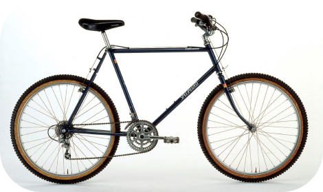
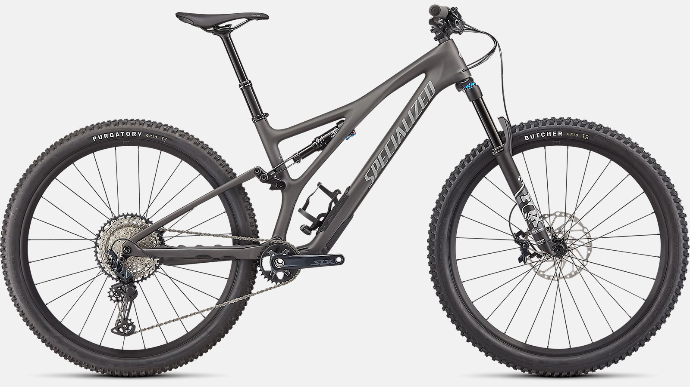

Historia
A finales de 1970 y principios de 1980, los cuadros de cruisers fueron la base para la bicicleta de montaña de reciente desarrollo. A mediados de los setenta, un grupo de entusiastas en California, comenzaron a competir con las bicis en monte Tamalpais en downhill, El terreno cuesta abajo era rocoso y la escarpada montaña ayudó a los corredores a alcanzar altas velocidades, donde saltaban y se estrellaban contra las rocas y el barro. En 1981 se produce la primera bicicleta de montaña producida en masa.
Antes
Después

